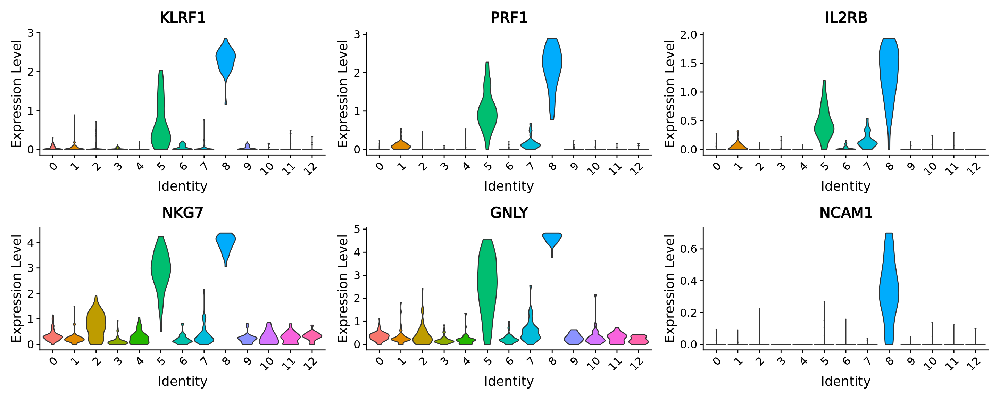

6.1 Standard analysis (R)
In this tutorial, standard analyses include dimensionality reduction, clustering and differential expression using the Seurat framework.
library(Seurat)
#> The legacy packages maptools, rgdal, and rgeos, underpinning this package
#> will retire shortly. Please refer to R-spatial evolution reports on
#> https://r-spatial.org/r/2023/05/15/evolution4.html for details.
#> This package is now running under evolution status 0
#> Attaching SeuratObject
library(dplyr)
#>
#> Attaching package: 'dplyr'
#> The following objects are masked from 'package:stats':
#>
#> filter, lag
#> The following objects are masked from 'package:base':
#>
#> intersect, setdiff, setequal, union
library(ggplot2)6.1.1 Load metacell Seurat object
We will use Seurat objects containing the metacells counts data and their annotation (e.g. cell-type annotation) and proceed with standard Seurat downstream analyses. Seurat objects containing metacells counts data and their annotation were generated at the end of sections 3.1 These objects can also be generated using the command line described in chapter 5
MC_tool = "SuperCell"
proj_name = "3k_pbmc"
annotation_column = "louvain"
celltype_colors <- c(
"CD14+ Monocytes" = "#E69F00", # orange
"B cells" = "#56B4E9", # sky blue
"CD4 T cells" = "#009E73", # bluish green
"NK cells" = "#F0E442", # yellow
"CD8 T cells" = "#0072B2", # blue
"FCGR3A+ Monocytes" = "#D55E00", # vermillion
"Dendritic cells" = "#CC79A7", # reddish purple
"Megakaryocytes" = "#000000" # black
)
MC.seurat = readRDS(paste0('./data/', proj_name, '/metacell_', MC_tool,'.rds'))6.1.2 Dimensionality reduction
As for single-cells, we normalize the raw counts (here aggregated raw counts) and we identify the most variable features in the metacells gene expression data. Based on these features, we run PCA and use the first principal components to obtain a two dimensionnal representation of the data using UMAP.
Idents(MC.seurat) <- annotation_column
MC.seurat <- NormalizeData(MC.seurat)
MC.seurat <- FindVariableFeatures(MC.seurat, selection.method = "vst", nfeatures = 2000)
MC.seurat <- ScaleData(MC.seurat)
#> Centering and scaling data matrix
MC.seurat <- RunPCA(MC.seurat, verbose = F)
MC.seurat <- RunUMAP(MC.seurat, dims = 1:30, verbose = F)
#> Warning: The default method for RunUMAP has changed from calling Python UMAP via reticulate to the R-native UWOT using the cosine metric
#> To use Python UMAP via reticulate, set umap.method to 'umap-learn' and metric to 'correlation'
#> This message will be shown once per session
DimPlot(MC.seurat, reduction = "umap", cols = celltype_colors)
6.1.3 Clustering
We cluster the metacells using Seurat clustering steps and visualize these clusters using UMAP:
MC.seurat$SCclustering <- SuperCell::supercell_cluster(D = dist(MC.seurat@reductions$pca@cell.embeddings[, 1:30] ), k = 8)$clustering
DimPlot(MC.seurat, reduction = "umap", group.by = "SCclustering")
6.1.4 Differential expression analysis
We perform diffrential analysis to identify the markers of our cluster 3 as an example using the FindMarkers function.
# Set idents to metacell annotation
Idents(MC.seurat) <- "SCclustering"
cells_markers <- FindMarkers(MC.seurat, ident.1 = "4", only.pos = TRUE)
#> For a more efficient implementation of the Wilcoxon Rank Sum Test,
#> (default method for FindMarkers) please install the limma package
#> --------------------------------------------
#> install.packages('BiocManager')
#> BiocManager::install('limma')
#> --------------------------------------------
#> After installation of limma, Seurat will automatically use the more
#> efficient implementation (no further action necessary).
#> This message will be shown once per session
head(cells_markers)
#> p_val avg_log2FC pct.1 pct.2 p_val_adj
#> LIM2 1.188910e-27 0.4687254 0.467 0.000 3.892253e-23
#> FASLG 1.281776e-26 0.9488759 0.800 0.036 4.196277e-22
#> SH2D1B 2.757388e-25 1.4437575 0.933 0.072 9.027137e-21
#> KIR3DL2 1.480605e-23 1.1403146 0.867 0.068 4.847204e-19
#> KIR3DL1 3.907898e-23 0.5023381 0.533 0.012 1.279368e-18
#> PRSS23 6.410015e-22 1.7388849 0.933 0.092 2.098511e-17We see that the top marker genes for this cluster contain Killer cell immunoglobulin-like receptors (KIRs) genes coding for transmembrane glycoproteins expressed by natural killer cells.
genes = c("KIR3DL2", "KIR3DL1")
VlnPlot(MC.seurat, genes, ncol = 2, pt.size = 0.0)
We can verify the identification of the NK cell cluster by comparing the metacell annotation and the metacell clustering.
p_cluster <- DimPlot(MC.seurat, group.by = "SCclustering")
p_annot <- DimPlot(MC.seurat, group.by = annotation_column, cols = celltype_colors)
p_cluster + p_annot
6.1.5 Visualize gene-gene correlation
We can use the supercell_GeneGenePlot function from the SuperCell package to visualize the correlation between marker genes of a cell-type:
(i) at the single-cell level and
(ii) at the metacell level.
For that, we load the single-cell data from which the metacells were derived from.
print(proj_name)
#> [1] "3k_pbmc"
sc_data <- readRDS(paste0("data/", proj_name, "/singlecell_seurat_filtered.rds"))
sc_data <- NormalizeData(sc_data, normalization.method = "LogNormalize")We visualize gene-gene correlation at the single-cell level:
cells_markers <- cells_markers [order(cells_markers$avg_log2FC, decreasing = T),]
gene_x <- rownames(cells_markers)[1:5]
gene_y <- rownames(cells_markers)[6:10]
alpha <- 0.7
p.sc <- SuperCell::supercell_GeneGenePlot(
GetAssayData(sc_data, slot = "data"),
gene_x = gene_x,
gene_y = gene_y,
clusters = sc_data@meta.data[, annotation_column],
sort.by.corr = F,
alpha = alpha,
color.use = celltype_colors
)
p.sc$p
We visualize gene-gene correlation at the metacell level:
p.MC <- SuperCell::supercell_GeneGenePlot(GetAssayData(MC.seurat, slot = "data"),
gene_x = gene_x,
gene_y = gene_y,
clusters = MC.seurat@meta.data[, annotation_column],
sort.by.corr = F, supercell_size = MC.seurat$size,
alpha = alpha,
color.use = celltype_colors)
p.MC$p